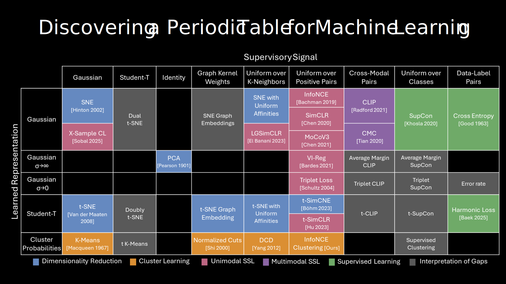

TL;DR: How can we build algorithms that learn without human labels, so that we can use AI to help solve scientific challenges humans dont yet know how to solve.
How does the human mind make sense of raw information without being taught how to see or hear? This thesis will explore how to build algorithms that can uncover interpretable structure from large collections of data like images and video without needing human annotations or labels. First, we will see how to build algorithms that can perform tasks like classifying every pixel of the world, localizing sound, and decoding natural language, just by watching unlabeled videos without any knowledge of text. Second, we will see how these ideas lead us to a new unifying theory of representation learning. In particular, I will show how 20+ common machine learning methods, such as dimensionality reduction, clustering, contrastive learning, and spectral methods emerge from a single unified equation. Finally, we will discuss how this unifying theory applies to our ongoing efforts to decode animal communication using large-scale, unsupervised, and interpretable learners. We will conclude with some preliminary analysis of the complex vocalizations of Atlantic Spotted Dolphins.
Related Projects

I-Con: A Unifying Framework for Representation Learning